GO Wild Area 2026 Global · 全球線上活動
Pokémon GO 曠野地帶 2026：全球
今年的曠野地帶以鋼屬性和龍屬性為主題，兩天都是 10:00～18:00。最大亮點是首度登場的超極巨化鋁鋼龍（六星極巨對戰），週六是極巨化帝牙盧卡、週日是極巨化帕路奇亞。所有人都能玩；買 US$11.99 入場券可以多拿特殊調查、更高的異色機率、更多團體戰入場券，還能用薰香吸引強大的拉帝亞斯與拉帝歐斯。
活動亮點

超極巨化鋁鋼龍
在六星極巨對戰首度登場，兩天都打得到，可能遇見異色。持票者還能透過活動限定特殊調查，遇見附特別背卡的超極巨化鋁鋼龍。

極巨化帝牙盧卡與帕路奇亞
週六（11/14）是極巨化帝牙盧卡、週日（11/15）是極巨化帕路奇亞，都可能遇見異色。
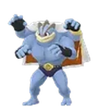
穿著夾克的怪力
專為曠野地帶設計的夾克造型，兩天都在三星團體戰登場，捕獲時會學會一般招式「空手劈」。

強大的拉帝亞斯與拉帝歐斯
持票者使用薰香（散步小薰香除外）時，可能吸引強大的拉帝亞斯與拉帝歐斯。牠們很容易逃走，記得準備 GO狩獵球。

曠野地帶特別背卡
活動期間在團體戰與極巨對戰捕捉穿著夾克的怪力、極巨化帝牙盧卡與帕路奇亞、萊希拉姆、捷克羅姆、酋雷姆、超極巨化鋁鋼龍，有機會附上全新特別背卡。
私人極巨對戰隊伍
極巨對戰大廳可以選「對戰」自動配對，或用隊伍代碼加入「私人隊伍」，跟朋友一起打更方便。
背卡顯示在訓練家檔案
夥伴寶可夢的地點背卡或特別背卡會顯示在訓練家檔案，好友也看得到；曠野地帶 2026 的特別背卡從 11/9 10:00 起支援。
 活動加成
活動加成
曠野週與全球活動期間（11/9 00:01～11/15 23:59）暫停「每日新發現」。前導活動「曠野週」（11/9～11/13）的團體戰、極巨對戰與 GO Pass 另有整理頁。
- 旋轉寶可補給站與道館轉盤時，有機會獲得 GO狩獵球
 每天旋轉道館轉盤最多可拿 3 張團體戰入場券
每天旋轉道館轉盤最多可拿 3 張團體戰入場券 每日極巨粒子蒐集上限提高到 1,600
每日極巨粒子蒐集上限提高到 1,600 每天 3 次 GO Snapshot 驚喜相遇（鋼與龍屬性寶可夢）
每天 3 次 GO Snapshot 驚喜相遇（鋼與龍屬性寶可夢）- 「小隊合作」可持續 8 小時
 跟隨「路線」時有機會遇見強大的寶可夢
跟隨「路線」時有機會遇見強大的寶可夢
- 遇見異色寶可夢的機率提高
- 每日極巨粒子蒐集上限提高到 3,200，探索與能量點獲得的極巨粒子增加
- 每天旋轉道館轉盤最多可拿 6 張團體戰入場券
- 捕捉寶可夢時的糖果加倍
 薰香效果時間加倍
薰香效果時間加倍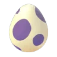
旋轉寶可補給站與道館轉盤時，拿到 10 公里蛋的機率提高- 每天 6 次 GO Snapshot 驚喜相遇
- 誘餌模組效果延長為 2 小時
- 活動時段每小時都有機會出現發送 GO狩獵球的補給氣球
- 每天最多可以進行 6 次特別交換
 交換寶可夢所需的星星沙子減半
交換寶可夢所需的星星沙子減半
時段棲息地
活動時段內每小時輪替：10:00 先是「硬如鋼鐵時間」，11:00 換成「膽大如龍時間」，之後每小時交替。✦ 表示可能遇見異色；只有伽勒爾泥巴魚目前沒有異色。
- 10鋼
- 11龍
- 12鋼
- 13龍
- 14鋼
- 15龍
- 16鋼
- 17龍
硬如鋼鐵時間10:00、12:00、14:00、16:00 開始

 穿山鼠阿羅拉的樣子
穿山鼠阿羅拉的樣子
 地鼠阿羅拉的樣子
地鼠阿羅拉的樣子
 小磁怪
小磁怪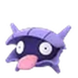
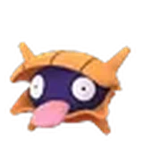
大舌貝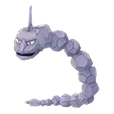
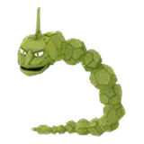
大岩蛇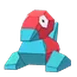
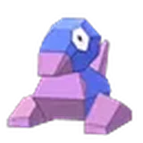
多邊獸- 壺壺
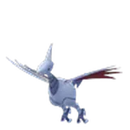
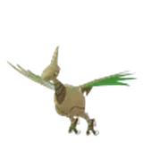
盔甲鳥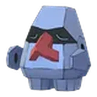
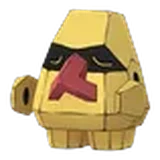
朝北鼻- 可可多拉
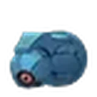
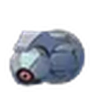
鐵啞鈴- 波加曼
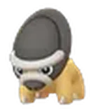
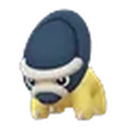
盾甲龍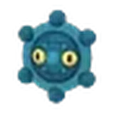
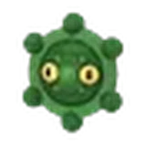
銅鏡怪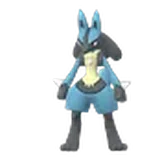
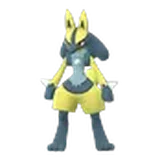
路卡利歐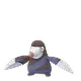
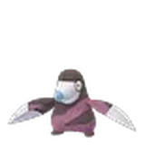
螺釘地鼠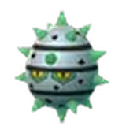
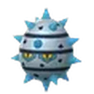
種子鐵球
 齒輪兒
齒輪兒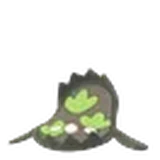
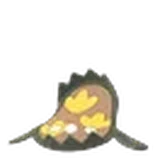
泥巴魚伽勒爾的樣子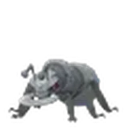
鐵蟻
 稚山雀
稚山雀
 小鍛匠
小鍛匠
膽大如龍時間11:00、13:00、15:00、17:00 開始
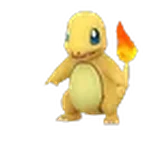
小火龍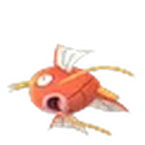
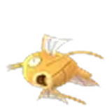
鯉魚王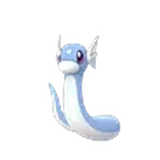
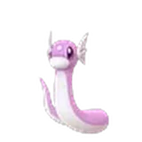
迷你龍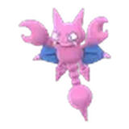
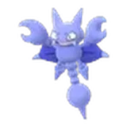
天蠍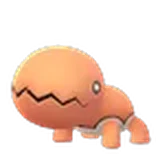
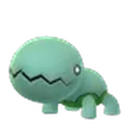
大顎蟻
 青綿鳥
青綿鳥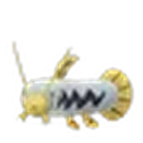
泥泥鰍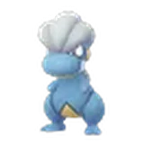
寶貝龍
 圓陸鯊
圓陸鯊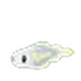
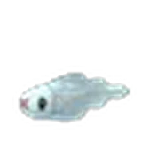
麻麻小魚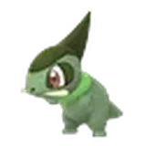
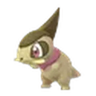
牙牙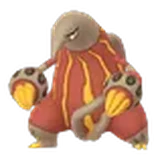
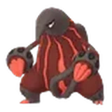
熔蟻獸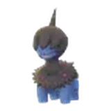
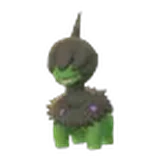
單首龍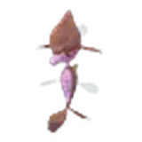
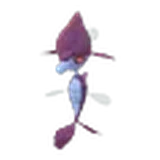
垃垃藻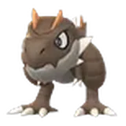
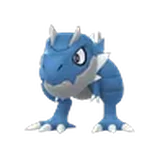
寶寶暴龍- 冰雪龍
- 黏黏寶

 嗡蝠
嗡蝠
 爆焰龜獸
爆焰龜獸
 心鱗寶
心鱗寶- 燒火蚣
- 涼脊龍
 強大的寶可夢
強大的寶可夢
強大的寶可夢比較可能有高個體值、XL 或 XXL 尺寸，但比較難抓；用 GO狩獵球可以大幅提高捕捉率。牠們很稀有，每天出現的種類不同。

 阿羅拉椰蛋樹
阿羅拉椰蛋樹- 巨鉗螳螂
- 沙漠蜻蜓
- 帝牙海獅
 巨金怪
巨金怪- 帝王拿波
- 自爆磁怪
- 修建老匠
- 雙斧戰龍
- 瑪力露麗
- 刺龍王
- 波士可多拉
- 堅果啞鈴
- 三首惡龍
- 黏美龍
- 音波龍
- 巨鍛匠
- 土王
 薰香能吸引的寶可夢
薰香能吸引的寶可夢
使用散步小薰香以外的薰香時才有效。強大的寶可夢兩天都可能被薰香吸引。
所有訓練家強大的寶可夢
- 阿羅拉椰蛋樹
- 瑪力露麗
- 巨鉗螳螂
- 刺龍王
- 波士可多拉
- 沙漠蜻蜓
- 帝王拿波
- 自爆磁怪
- 修建老匠
- 三首惡龍
持票者額外未知圖騰 D・I・L・W 與強大的拉帝亞斯、拉帝歐斯
- 未知圖騰 D
- 未知圖騰 I
- 未知圖騰 L
- 未知圖騰 W
- 強大
 拉帝亞斯
拉帝亞斯 - 強大

 拉帝歐斯
拉帝歐斯
團體戰與極巨對戰
- 服裝穿著夾克的怪力
- 服裝穿著夾克的怪力
 捷克羅姆
捷克羅姆
 焰白酋雷姆
焰白酋雷姆

 萊希拉姆
萊希拉姆
 闇黑酋雷姆
闇黑酋雷姆
- 極巨化
 極巨化帝牙盧卡
極巨化帝牙盧卡 - 超極巨化
 超極巨化鋁鋼龍
超極巨化鋁鋼龍
- 極巨化

 極巨化帕路奇亞
極巨化帕路奇亞 - 超極巨化超極巨化鋁鋼龍
打完焰白酋雷姆與闇黑酋雷姆的團體戰會拿到合體能量，可以讓酋雷姆合體；團體戰遇見的酋雷姆有機會學會特殊招式「冰封世界」。
10 公里蛋
活動期間 10 公里蛋可能孵出下列寶可夢；持票者旋轉補給站與道館時拿到 10 公里蛋的機率提高。
- 獨劍鞘
- 鑰圈兒

 老翁龍
老翁龍
 鋁鋼龍
鋁鋼龍
特別招式
- 穿著夾克的怪力團體戰捕獲格鬥空手劈一般招式
- 沙漠蜻蜓活動中遇見或進化地面大地之力特殊招式
- 巨金怪活動中遇見或進化鋼彗星拳特殊招式
- 自爆磁怪活動中遇見或進化鋼磁鐵炸彈特殊招式
- 雙斧戰龍活動中遇見或進化龍廣域破壞特殊招式
- 三首惡龍活動中遇見或進化惡狂舞揮打特殊招式
- 巨鍛匠活動中遇見或進化鋼巨力錘特殊招式
活動期間遇見或進化的這些寶可夢會學會上列招式；想留招式的話，記得在 11/15 18:00 前進化。
 特殊調查與田野調查
特殊調查與田野調查
持票者在 11/14 10:00 之後可以領取活動限定的分歧特殊調查，深入認識超極巨化鋁鋼龍；完成後可遇見附特別背卡的超極巨化鋁鋼龍，並獲得新的訓練家姿勢。
途中要選擇鋼屬性或龍屬性其中一條路線，選擇會決定部分獎勵與加成。加成從領到獎牌開始，到 11/15 18:00 為止，所以越早開始越划算。
捕捉鋼屬性的強大寶可夢時，額外獲得 1,000 星星沙子；等級 31 以上再多 1 顆糖果XL。
捕捉龍屬性的強大寶可夢時，額外獲得 1,000 星星沙子；等級 31 以上再多 1 顆糖果XL。
- 參加過曠野地帶現場活動的訓練家，另外購買全球入場券也能領取這個特殊調查。
- 田野調查：活動期間比較容易拿到活動主題的田野調查，完成後可遇見活動主題寶可夢；任務內容官方尚未公布。
活動入場券
- 兩天的持票者加成（異色機率、糖果加倍、6 張團體戰入場券…）
- 分歧特殊調查：超極巨化鋁鋼龍（附特別背卡）
- 薰香吸引強大的拉帝亞斯、拉帝歐斯與未知圖騰
- 每小時發送 GO狩獵球的補給氣球
- 兩天全天：6 次特別交換、交換星沙減半
- 不買入場券也能參加：時段棲息地、強大的寶可夢、團體戰與極巨對戰、GO狩獵球都是所有人共通。
- 購買入場券不保證一定遇見異色。
- 活動期間遊戲內商店另有鋁鋼龍頭盔、超極巨化鋁鋼龍背包、格鬥屬性夾克等換裝道具。
 攻略重點
攻略重點
- GO狩獵球留給強大的寶可夢
GO狩獵球只能在兩天的 10:00～18:00 使用，活動結束就消失。強大的寶可夢難抓又容易逃，遇到再丟狩獵球最划算。
- 看時段換地點
整點輪替鋼與龍：想抓圓陸鯊、寶貝龍、涼脊龍就把握奇數整點（11、13、15、17 點），想要螺釘地鼠、銅鏡怪就在偶數整點。
- 超極巨化鋁鋼龍要湊人
六星極巨對戰難度很高，用新的「私人隊伍」揪好友，先把夥伴寶可夢的極巨招式升級。
- 持票者早點選路線
分歧特殊調查的獎牌加成從領到獎牌開始算，越早完成越多時間吃到額外星沙與糖果XL。
- 交換加成是全天
持票者的 6 次特別交換與星沙減半是 00:00～23:59，晚上活動結束後還能慢慢換。
- 準備極巨粒子
極巨粒子上限提高到 1,600（持票 3,200），前一天先把粒子用掉、活動當天才能多存。
 常見問題
常見問題
曠野地帶 2026：全球是什麼時候？
2026 年 11 月 14 日（週六）與 15 日（週日），每天 10:00～18:00，各地都是當地時間。
不買入場券可以玩嗎？
可以。時段棲息地、強大的寶可夢、團體戰、極巨對戰與 GO狩獵球所有人都有；入場券（US$11.99）額外提供特殊調查、異色機率提高、糖果加倍、更多團體戰入場券等加成。
超極巨化鋁鋼龍在哪裡打？
兩天都會在六星極巨對戰登場；持票者完成特殊調查還能遇見附特別背卡的超極巨化鋁鋼龍。
強大的寶可夢有什麼不同？
比較可能有高攻擊、防禦與 HP，也比較可能是 XL 或 XXL 尺寸，但捕捉難度較高；用 GO狩獵球可以大幅提高捕捉率。
GO狩獵球可以留到活動後用嗎？
不行。GO狩獵球只能在兩天的 10:00～18:00 使用，活動結束後剩下的會無法使用。